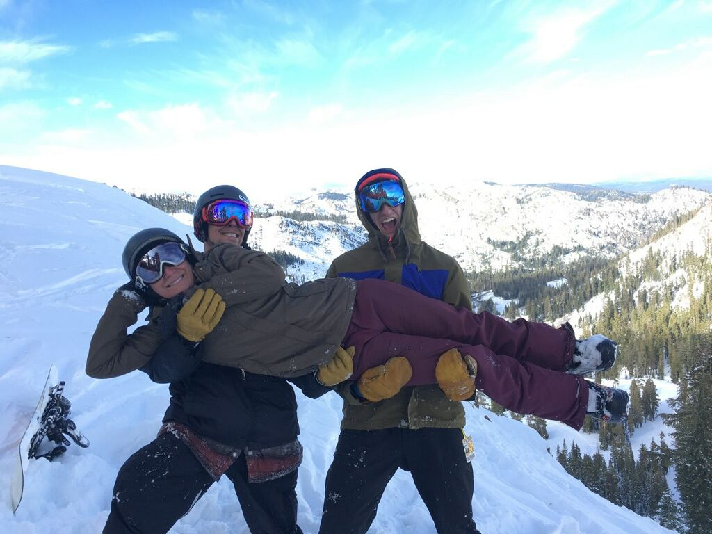

Tristan Gavin's Webpage
About Me
"If you're getting rad and there's no one there to see it are you really getting rad at all?" Welcome to my website! I am a rower and computer science major / math minor at Oregon State University. I like to spend my time sitting on a rowing machine going back in forth until I am really sweaty and in a lot of pain. I also enjoy skiing, rock-climbing, rafting backpacking, and getting rad in the outdoors with my freinds.
Ski Bummin' in Tahoe
I didn't know what I wanted to do after high school and ended up being a ski bum in tahoe for a year and learned some really important life skills. I didn't own a car so I hitchhiked to my job as a janitor at the Alpine Meadows ski resort but my shifts usually didn't end until close to midnight so trying to a ride 20 miles back home in the middle of the night wasn't working out too great. I ended up buying a Ford Exploder for $500 dollars that the transmission was broken on so it couln't go in reverse. This caused for some precarious situations to say the least.
My roomate Leslie taught me how to enjoy and appreciate the absolute beauty and joy that the outdoors provides. She took me on wild adventures and introduced me to all her freinds which I had none of at the time. I can not be more greatful for my experience living there and for the people I became close to.
What Now?
I have temporarily set aside my passion for getting rad to focus on my personal development. I am currently pursuing a degree in computer science with a focus in artifial intelligence. I am specifically interested in machine learning and the linear algebra and statistics behind it. Machine learning is an extremely powerful tool being used to solve complex and deep problems that were previously unaproachable.